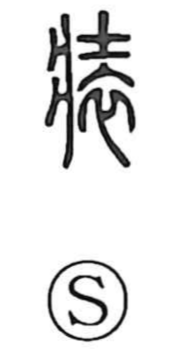

装

Uncategorized
Kun: yosoou, yosooi | On: sou, shou
to dress ・ to adorn ・ attire ・ to equip
Explanation
Originally written as 裝, this is a phono-semantic character with 壯 (read sō) serving as the phonetic element. Its basic sense is to arrange the outward appearance by means of clothing—hence to dress or adorn. From that core meaning it broadens into contexts beyond garments: in 装甲 it is the act of putting on armor or plating; in 表装 and 装潢 it denotes the mounting and binding of paintings or calligraphy; and in 装釘・装訂—now commonly written 装丁・装幀—it refers to preparing a book’s cover and outward form. The compound 装束 originally meant preparing for a journey, and later came to mean setting one’s attire in proper order.